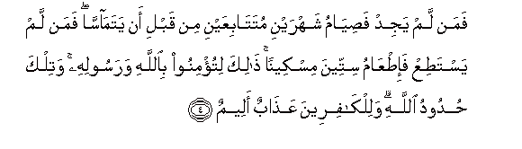

Sacred Texts Islam Index
Hypertext Qur'an Unicode Palmer Pickthall Yusuf Ali English Rodwell
Sūra LVIII.: Mujādila, or The Woman who Pleads. Index
Previous Next

The Holy Quran, tr. by Yusuf Ali, [1934], at sacred-texts.com
Sūra LVIII.: Mujādila, or The Woman who Pleads.
Section 1
1. Qad samiAAa Allahu qawla allatee tujadiluka fee zawjiha watashtakee ila Allahi waAllahu yasmaAAu tahawurakuma inna Allaha sameeAAun baseerun
1. God has indeed
Heard (and accepted) the statement
Of the woman who pleads
With thee concerning her husband
And carries her complaint
(In prayer) to God:
And God (always) hears
The arguments between both
Sides among you: for God
Hears and sees (all things).
2. Allatheena yuthahiroona minkum min nisa-ihim ma hunna ommahatihim in ommahatuhum illa alla-ee waladnahum wa-innahum layaqooloona munkaran mina alqawli wazooran wa-inna Allaha laAAafuwwun ghafoorun
2. If any men among you
Divorce their wives by
(Calling them mothers),
They cannot be their mothers:
None can be their mothers
Except those who gave them
Birth. And in fact
They use words (both) iniquitous
And false: but truly
God is One that blots out
(Sins), and forgives
(Again and again).
3. Waallatheena yuthahiroona min nisa-ihim thumma yaAAoodoona lima qaloo fatahreeru raqabatin min qabli an yatamassa thalikum tooAAathoona bihi waAllahu bima taAAmaloona khabeerun
3. But those who divorce
Their wives by Zihār,
Then wish to go back
On the words they uttered,—
(It is ordained that
Such a one)
Should free a slave
Before they touch each other:
This are ye admonished
To perform: and God is
Well-acquainted with (all)
That ye do.

4. Faman lam yajid fasiyamu shahrayni mutatabiAAayni min qabli an yatamassa faman lam yastatiAA fa-itAAamu sitteena miskeenan thalika litu/minoo biAllahi warasoolihi watilka hudoodu Allahi walilkafireena AAathabun aleemun
4. And if any has not
(The wherewithal),
He should fast for
Two months consecutively
Before they touch each other.
But if any is unable
To do so, he should feed
Sixty indigent ones.
This, that ye may show
Your faith in God
And His Apostle.
Those are limits (set
By) God. For those who
Reject (Him), there is
A grievous Penalty.
5. Inna allatheena yuhaddoona Allaha warasoolahu kubitoo kama kubita allatheena min qablihim waqad anzalna ayatin bayyinatin walilkafireena AAathabun muheenun
5. Those who resist God
And His Apostle will be
Humbled to dust, as were
Those before them: for We
Have already sent down
Clear Signs. And the Unbelievers
(Will have) a humiliating Penalty,—
6. Yawma yabAAathuhumu Allahu jameeAAan fayunabbi-ohum bima AAamiloo ahsahu Allahu wanasoohu waAllahu AAala kulli shay-in shaheedun
6. On the Day that
God will raise them
All up (again) and show
Them the truth (and meaning)
Of their conduct. God has
Reckoned its (value), though
They may have forgotten it,
For God is Witness
To all things.